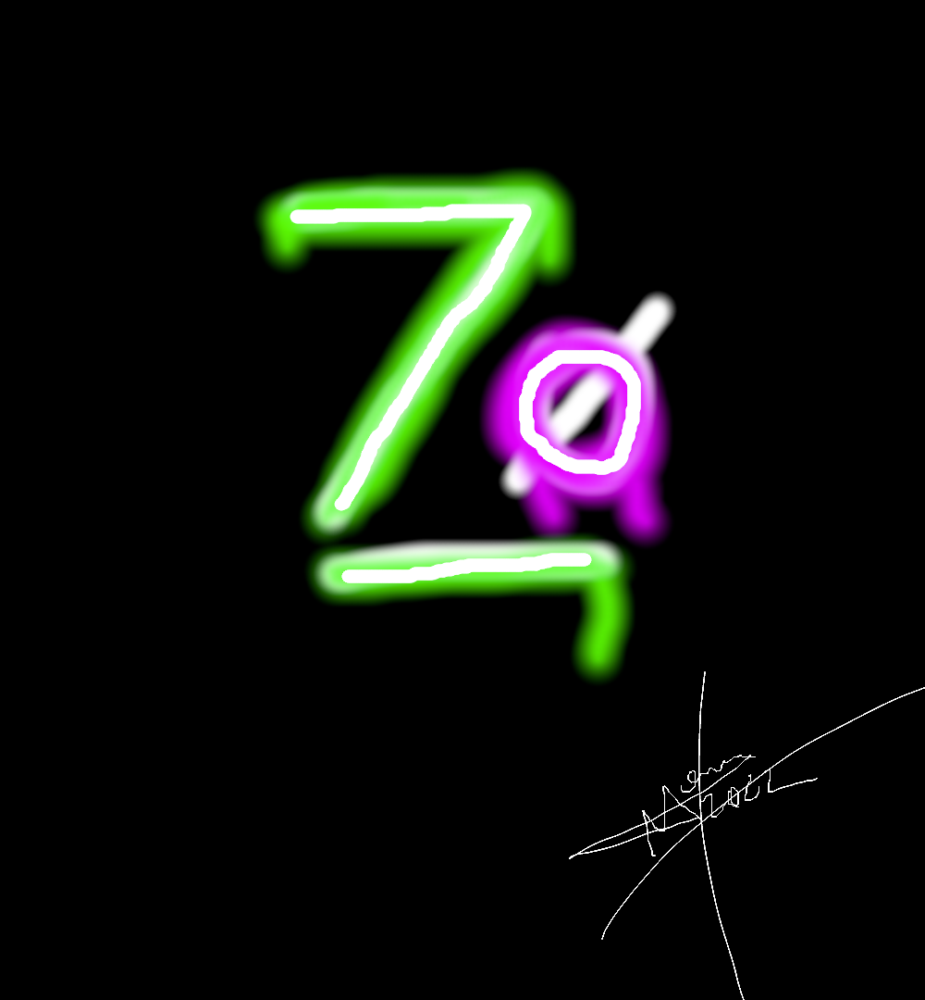

imagens que se adaptão sozinhas:

Reproduzindo Áudio
Escuta esse beat:
Áudio com mais compatibilidade com os navegadores
Reproduzindo Videos hospedados localmente
Veja esse video
Posso colocar uma imagem como capa no video
Reproduzindo Vídeos Externos do Youtuber